Scene 1Warm-Up
▶ Start hereHow your Wonder Films lessons work1-minute videoOpen ▾
🎯 TodayI can…
- explain that plants make their own food using sunlight, water, and air.
- describe what leaves and roots each do during photosynthesis.
- use evidence to explain why plants kept in darkness stop growing.

🔎 Mystery specimenWhat can one young plant show you?
What to do: Press Inspect specimen. Move the magnifying lens over the plant, then tap 3 things you notice.
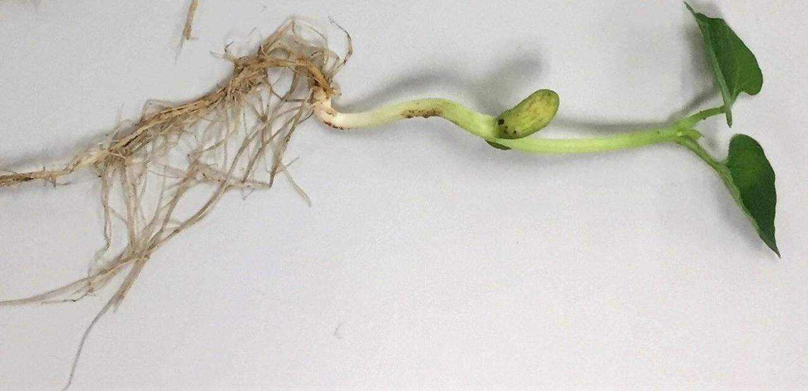
📚 Word WallWords scientists use
What to do: Tap or click each card to flip it and read what the word means. Tap 🔊 to hear the word.
Scene 2The Lesson
☀️ Part 1Plants Make Their Own Food
Animals eat food to get energy. Plants do something different: they make their own food. The process is called photosynthesis.
A plant captures sunlight and uses it to turn water and air into sugar. That sugar is the plant's food. It gives the plant energy to grow new roots, stems, leaves, flowers, and seeds.
🎞️ Put the scenes in orderWhere does a tree's food come from, and where does it go?
What to do: Drag each photo into the film strip, from first to last. You can also tap a photo, then tap a frame. Get the order right and your strip becomes a movie.
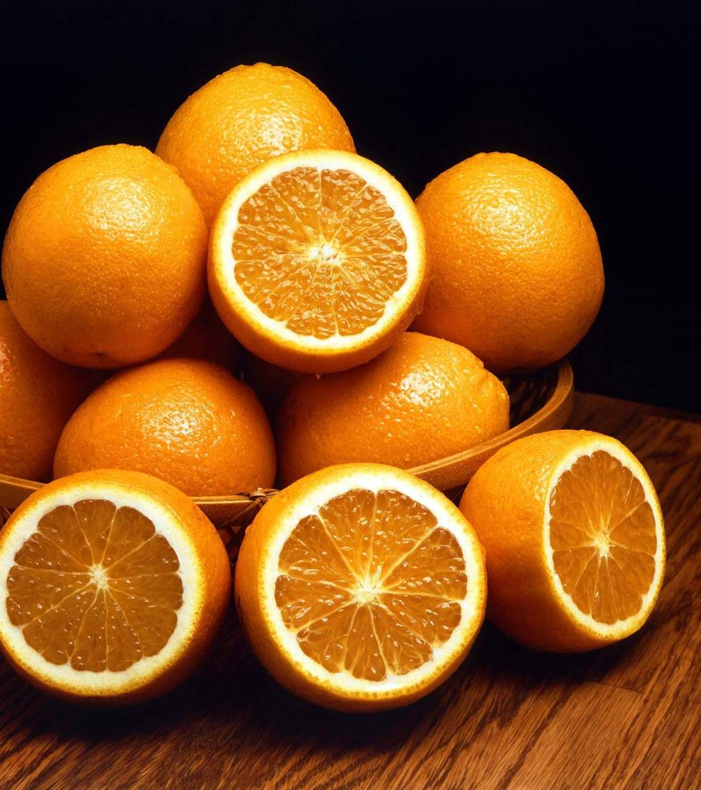
Look at scene 4. Where did the sugar in the orange come from?
🍃 Part 2Leaves, Roots, and Air Work Together
Three things go into photosynthesis: sunlight, water, and air. Leaves face the sun and soak up light. Tiny openings in leaves let air in. The plant uses one gas from the air, called carbon dioxide.
Roots pull water up from the soil. The water travels up the stem to the leaves. Inside each leaf, the plant combines sunlight, water, and air to make sugar. The sugar travels through the stem to every part that needs energy.
🧪 The Root and Leaf LabWhich part soaks up water, and which soaks up sunlight?
What to do: Follow the steps one at a time. You will pick, test, and then explain.
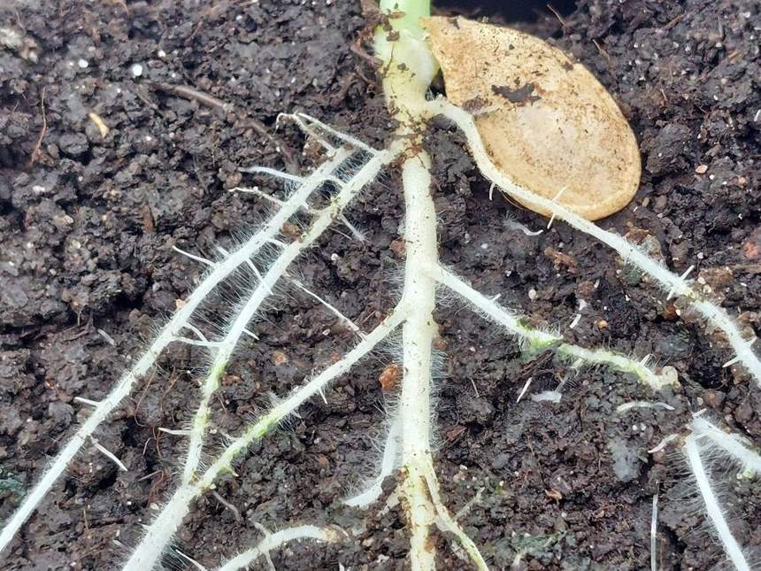
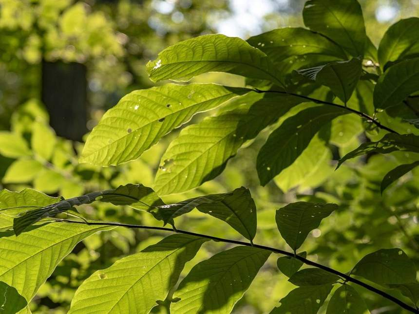
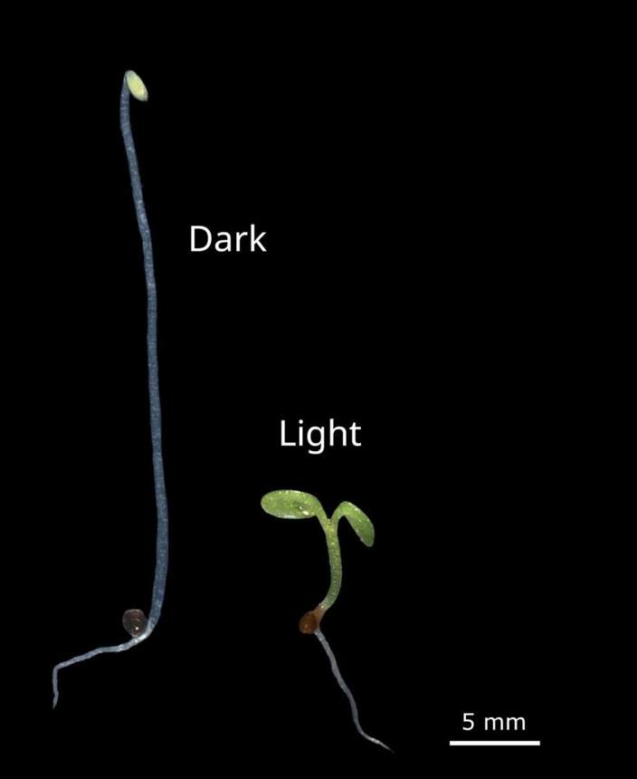
🔬 Part 3How We Know Sunlight Matters
Scientists figured this out by taking sunlight away. A plant kept in the dark stops making food. Its leaves turn yellow, and it gets smaller and weaker.
A plant in bright light stays green and keeps making sugar. Same plant, same water: the only difference is light. That difference is the evidence that sunlight is the key ingredient.
🌳 The tree elevatorRide down a Florida live oak, from leaves to roots
What to do: First, make a prediction. Then brush the glowing layer: drag across it (or tap it again and again) until the plant shows.
Which part of the tree do you think makes its food?
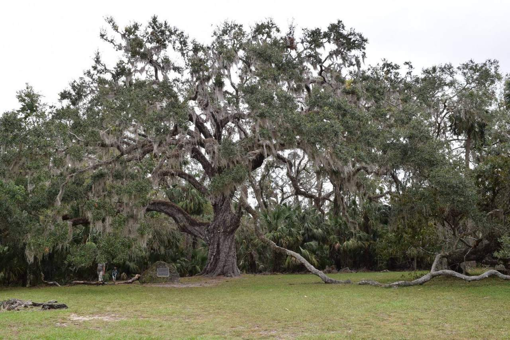
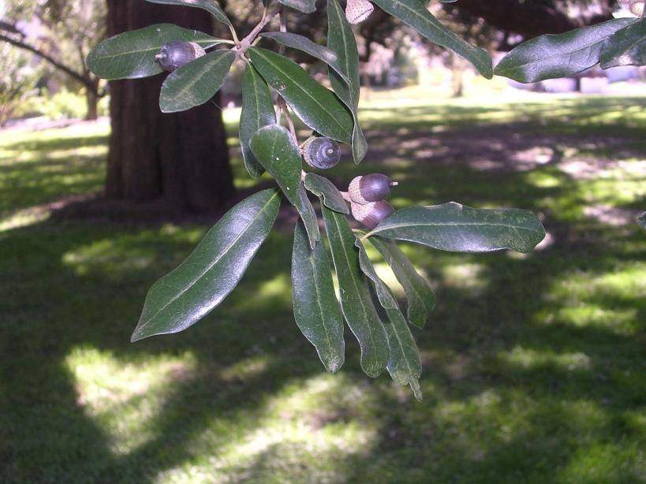
Level 1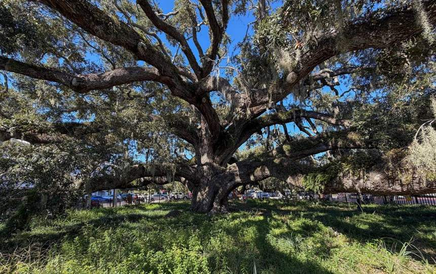
Level 2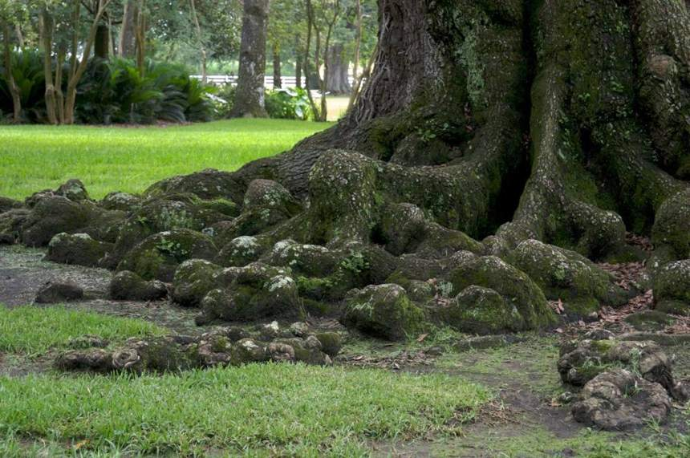
Level 4Every part of a plant has a job. Roots take in water, the trunk or stem carries it up, and the leaves use sunlight, water, and air to make sugar.
The leaves made the sugar. Does all of the sugar stay in the leaves?
A tree that breathes with you
Every leaf on a tree is covered with tiny openings. Air goes in, and the tree keeps one gas from it: carbon dioxide.
Scientists estimate a grown tree takes in about 48 pounds of carbon dioxide each year. As it makes sugar, it lets out oxygen, the gas you breathe!
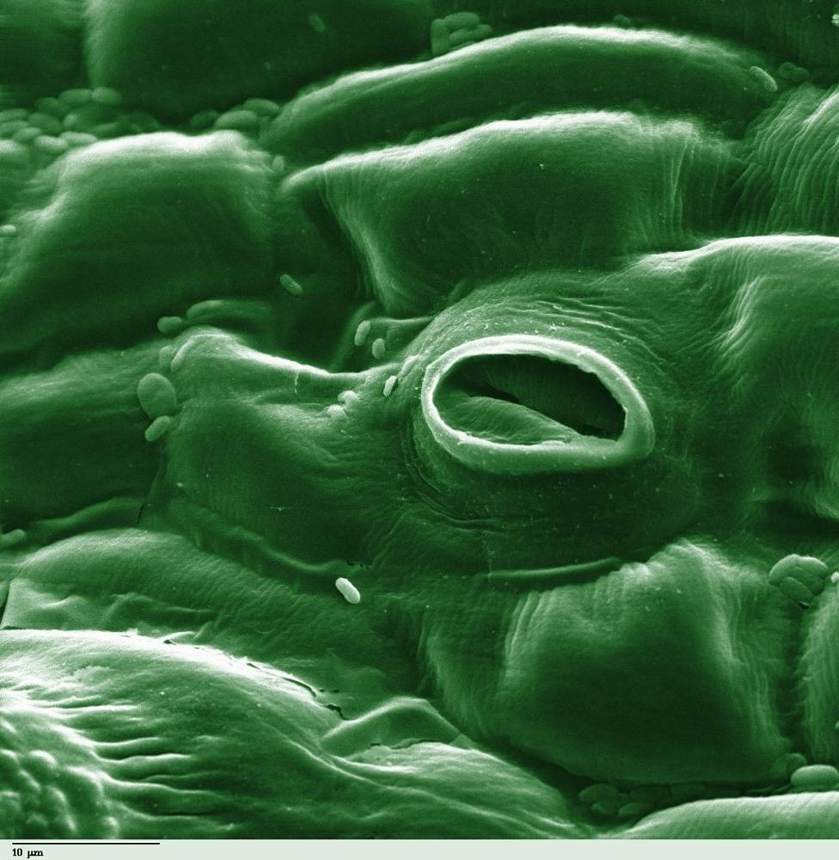
🗂️ Part 4Light Detectives
What to do: Pick 3 cards, one at a time. Tap a clue you see, then pick what it is. Predict where it grows, and watch its home appear.
| Plant | What I observe | The clue | Its home | My evidence |
|---|
🌍 Rebuild the plant's homeUse your evidence to rebuild the plant's home OPTIONALOpen ▾
What to do: Pick one you solved. Pick the place it points to, then pick the living things that belong there.
Pick one from your chart and explain it.
Start with: "Plant __ has…"
Scene 3Self-Check
What three things does a plant combine to make food during photosynthesis?
What would most likely happen to a plant kept in total darkness for many weeks?
Which plant part is mainly responsible for capturing sunlight during photosynthesis?
Scene 4Assignment
🔍 Part ALabel the process
What to do: Picture a plant with the sun above it. Pick the best answer for each arrow, then type your answer for the last one.
1. The sunlight arrow points to the plant's…
2. The water arrow starts at the… and travels up the stem.
3. The air arrow goes into the plant's…
4. What does the plant make, and where does it travel?
🚀 Part BShort answer
What to do: Answer in complete sentences. Use your science words.
1. Why do plants need sunlight? Explain what would happen if a plant got no light at all.
2. What job do the roots do in photosynthesis? How does their job connect to what happens in the leaves?
✍️ Write and explainWalk through your thinking
What to do: A friend says, "Plants eat from the soil, just like animals eat food." Do you agree or disagree? Use what you learned about photosynthesis to explain. Use at least one of the science words under the boxes.
Start with: "I disagree / agree because plants actually…"
Start with: "I know this because the lesson showed that plants…"
Start with: "This makes sense because…"
🎨 Part CDraw and label
What to do: Draw a before and after: one plant in bright sunlight and one plant kept in the dark. Under each one, write what you see. Name at least 3 differences in all.
🎬 Your question from Scene 1Can you answer it now?
What do you still wonder about? Write your question here. Then answer it.
📋 My answersEverything you wrote, in one place
(Your answers show up here as you write.)
How to turn in: Copy your answers and paste them into the Canvas assignment. Or download the file and upload it. Then press Save my drawing in Part C and upload your drawing too.
✅ Checklist
What to do: Tap each item when it is done. Items you finish on the page check themselves.
- My evidence chart has 3 plants and my explanation.
- Part A: all four answers.
- Part B: questions 1 and 2.
- Part C: my drawing and both labels.
- Write and explain, with at least one science word.
🎬 Premiere my food-factory storyYour exhibit
What to do: Check your exhibit. Pick the one you wrote about, add your first name, then press Premiere film.
I observed…
I think it was…
My evidence…
It tells us…
🎞️ This film's frames
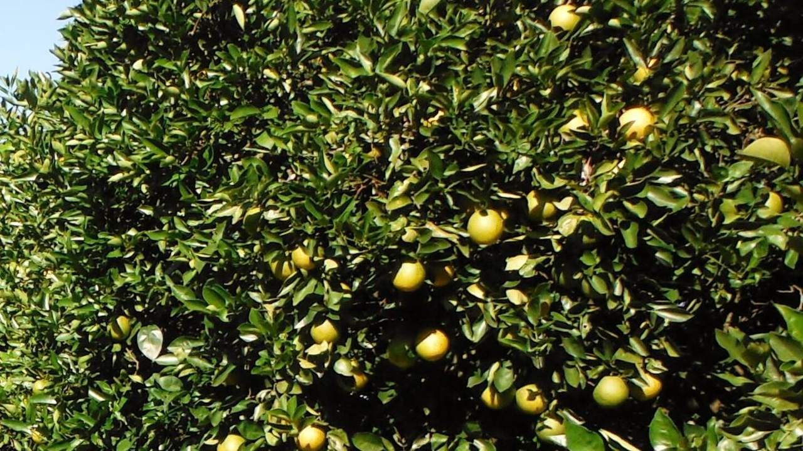
Where the food goes
The Root and Leaf Lab
The tree elevator
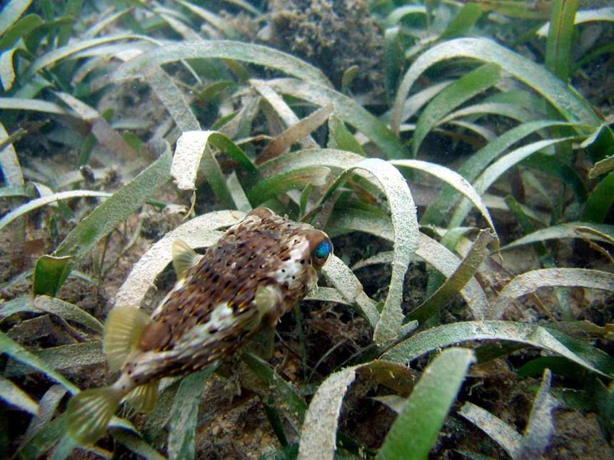
Light detectives
Earn all four frames in the Lesson, then finish the checklist.
🔜 Coming up next19.02 · Investigation: Light & Plant Growth
Next time, you'll investigate what happens to plants that get more light, less light, or none at all.
Photo and music credits
- Keimlinge Arabidopsis D-light, Mathias Zeidler, University of Giessen, Germany, CC0
- Etiolated Spanish Bluebells Hyacinthoides hispanica, Chiswick Chap, CC BY-SA 3.0
- Lampenflora, 7and, CC BY 3.0
- Naklíčené brambory (2), Dezidor, CC BY 3.0
- FKNMS - pufferfish seagrass (28164201941), National Marine Sanctuaries, Public domain
- Kansas sunflower field up close LCCN2011633520, Carol M. Highsmith, Public domain
- Florida orange grove, Mmacbeth, CC0
- Mammoth Cave National Park (84955282-ee03-4878-80e4-9b778108f63c), NPS, Public domain
- Sprouted potato boxes basement, B137, CC0
- Sunflower field and wind turbines in Republic County, Kansas (September 2026), Ben1152000, CC BY-SA 4.0
- FKNMS - snorkeler (31136703280), National Marine Sanctuaries, Public domain
- Taro leaf underside, backlit by sun, Avenue, CC BY-SA 3.0
- Zebrina stomata, AioftheStorm, CC0
- Ambersweet oranges, USDA ARS, Public domain
- Kürbis (Cucurbita maxima) Keimung im Rhizotron--Josef Schlaghecken, Schlaghecken Josef, CC BY-SA 4.0
- Kürbis (Cucurbita maxima) Haarwurzeln--Josef Schlaghecken, Schlaghecken Josef, CC BY-SA 4.0
- Baranoff Oak trunk and branches, Safety Harbor, Florida, Taty2007, CC BY 4.0
- Fairchild Oak -- Live Oak, Djngsf, CC BY-SA 4.0
- Navy Bean Seed to Seedling Germination, B. Domangue, CC BY-SA 4.0
- Venice, Florida - Orange sunrise, Don Miller, CC BY 2.0
- Blacklick Woods - Sunlight through American beech 1, Sixflashphoto, CC BY-SA 4.0
- Tomato leaf stomate 1-color, Photohound, Public domain
- Baranoff Oak spreading branches, Safety Harbor, Florida, Taty2007, CC BY 4.0
- Quercus virginiana-leaves-acorns, No machine-readable author provided. Phr~commonswiki assumed, CC BY-SA 3.0
- Live oak 20070706-200126, Photo by Michael Overton., CC BY-SA 3.0
- Music: Grieg, Peer Gynt Suite No. 1, "Morning Mood", Musopen Symphony, public domain (Wikimedia Commons).
- Opti the owl: Optima Academy. Sound effects are made by the page. The tree elevator and the orange-tree movie are models; every plant photo is real. The microscope photo of the tomato leaf was colored by the scientists who took it.